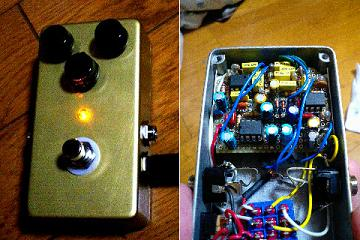
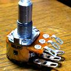
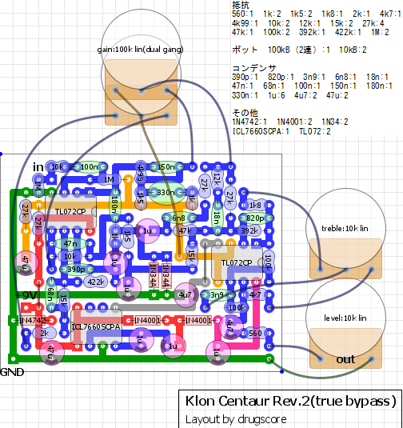
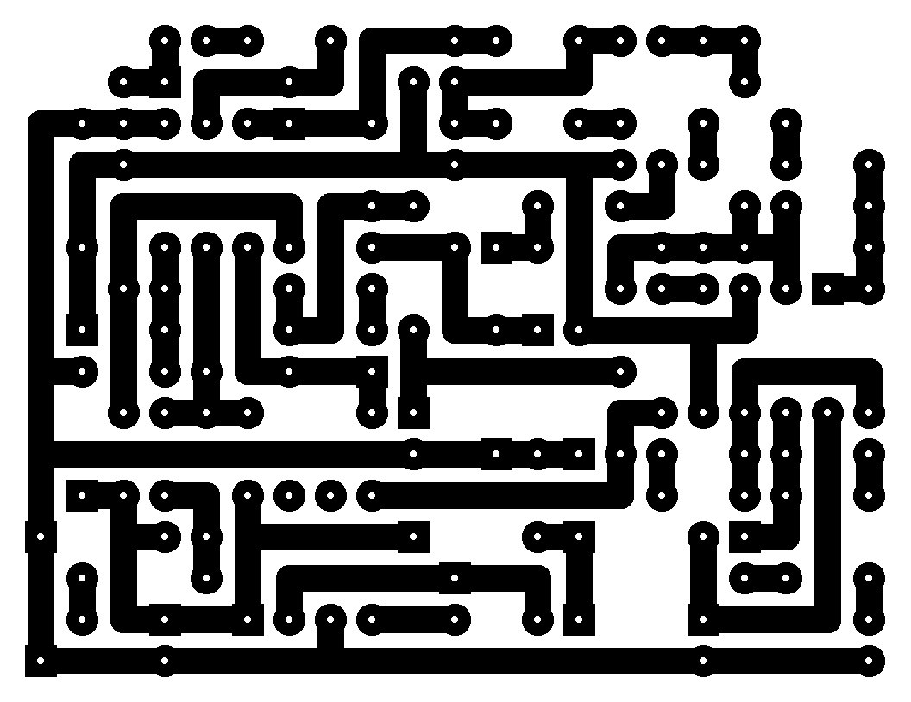
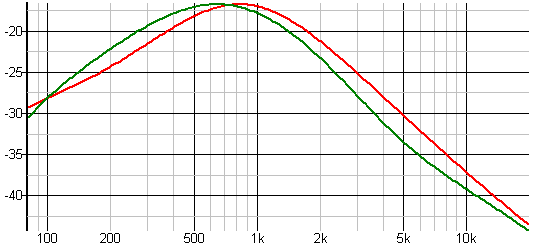

KLON CENTAUR
2008年06月18日 カテゴリー：自作エフェクター（アナログ）

もはや説明の必要はない、ケンタウロスです。FREESTOMPBOXESの回路図を用いています。なんとかMXRサイズのケースに入りました。下写真のように2連ポットの端子を折り曲げてます。

▽回路図
Coda Effects→KLON CENTAUR 回路解析
▽レイアウト

▽PCB（横55.9mm縦43.2mm）

Rev.2となっているのは、以前出回っていた回路図とは違うという意味です。今回ダイオードは1N60、コンデンサは180nF→100nF＋82nF、330nF→220nF＋100nFで作っています。昇圧ICはTC7662BCPAにしました。これは耐圧が15Vなので1N4742はつけてないです。
音は…確かにいいとは思いますがそれほど抜群に良いという気はしません。ブースターとして評価されているようですが、チューブアンプで試してないのでその本領を発揮できていないのでしょう。単体の歪みは結構気に入っています。ノイズはそんなに気にならない程度です。
塗装はベタに100円の金色スプレーです。結構いい色してるんですがなかなかいい写真が撮れなくて残念です。
以前まで出回っていた回路と最近FREESTOMPBOXESで明らかになった回路を周波数特性のシミュレーションで比較してみました。ダイオードは1N4148、ゲイン半分、トーン回路省略です。レベルは同じぐらいに合わせてあります。

緑が旧回路、赤が新回路です。ピークがちょっと違うようですね。